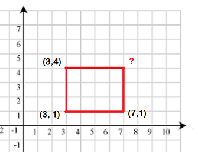

Trên mặt phẳng, cho tọa độ ba đỉnh (x1, y1), (x2, y2), (x3, y3) của một hình chữ nhật, hãy tìm tọa độ của đỉnh còn lại.

Dữ liệu nhập:
- Là 06 số nguyên theo thứ tự x1, y1, x2, y2, x3, y3 (-100 ≤ x1, y1, x2, y2, x3, y3 ≤ 100), mỗi số cách nhau một khoảng trắng. Dữ liệu đảm bảo 3 tọa độ trên là 3 đỉnh của hình chữ nhật.
Dữ liệu nhập:
- Là hai số nguyên x4, y4 cách nhau một khoảng trắng - tọa độ của đỉnh còn lại.